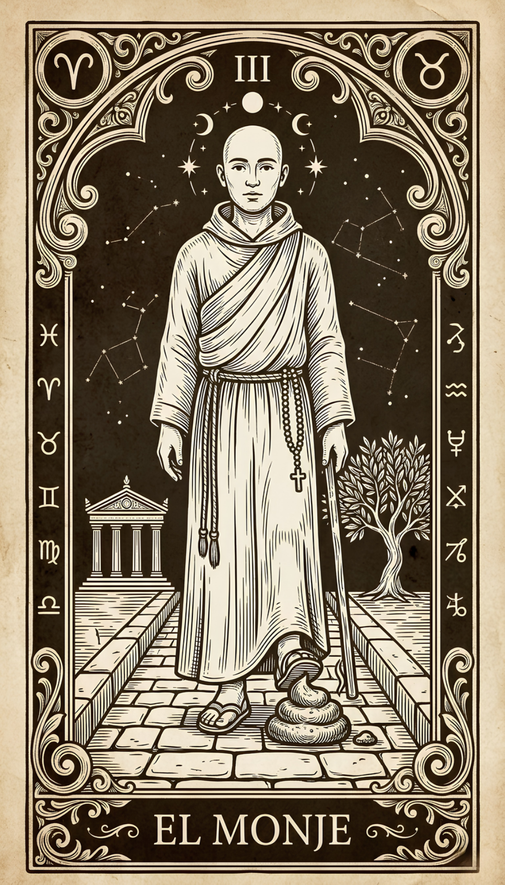
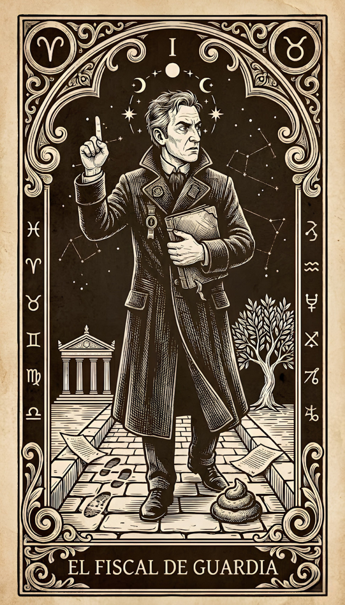
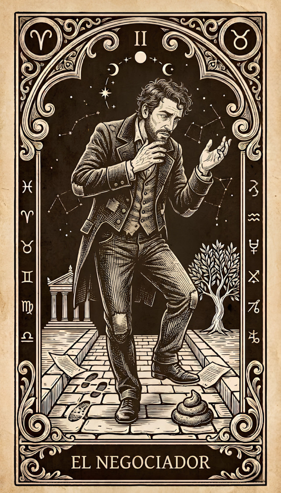

Respondé las siguientes situaciones
Antes
Cuando caminás por la calle, ¿cómo va tu mirada?
Antes
¿En qué estás pensando cuando caminás?
Durante
¿Cómo te dás cuenta de que pisaste?
Durante
¿Qué hacés en los tres segundos después?
Después
¿Cómo resolvés el zapato?
Después
¿Cuánto tiempo ocupa esto en tu cabeza después de resolverlo?
Tu perfil pisador
Los cinco arquetipos

III · El Monje
Hay personas que, cuando algo inesperado aparece en el camino, simplemente lo incorporan. Sin drama, sin expediente. El Monje pisó, limpió, siguió. No porque no sintió nada, sino porque tiene una relación con lo que no controla que la mayoría tarda años en construir. Está ahí, en el momento, con lo que hay. Lo que el Monje raramente se pregunta es si esa serenidad es presencia real o si es que aprendió, sin darse cuenta, a no quedarse demasiado tiempo en nada.

I · El Fiscal de Guardia
Existen personas cuya mente, ante cualquier evento, abre automáticamente una investigación. El Fiscal no reacciona ante la caca, la procesa. Reconstruye la cadena causal, identifica responsabilidades y archiva el expediente. Esa claridad para ver quién tiene la culpa es una capacidad real, y en los momentos que importan puede ser una ventaja enorme. El detalle es que los archivos se acumulan, y mientras el Fiscal está construyendo el caso, a veces ya pasó lo que valía la pena vivir.

II · El Negociador
Entre lo que pasó y aceptar que pasó, existe un intervalo. El Negociador lo conoce bien porque vive ahí. No niega la evidencia, pero necesita un momento. Quizás fue otra cosa. Quizás con otro zapato no hubiera pasado. Esa capacidad de ver todos los ángulos antes de decidir es genuina y útil. Lo que el Negociador todavía está explorando es la diferencia entre tomarse el tiempo necesario y usar el tiempo para no tener que llegar a ningún lado.

IV · El que Necesita Testigos
Este arquetipo no está completo sin el otro. No porque le falte algo, sino porque su forma natural de procesar el mundo es con otros. Pisar caca en soledad es, para este arquetipo, una experiencia a medias. Esa capacidad de construir momentos compartidos, de hacer que las cosas importen colectivamente, es una habilidad social que no todo el mundo tiene. Lo que todavía está aprendiendo es que algunas experiencias no necesitan testigos para haber sido reales, y que estar solo con lo que pasa no siempre es lo mismo que estar perdido.

V · El que ya Sabe Cómo lo Va a Contar
Antes de que el zapato toque el suelo, la mente ya está en otro tiempo verbal. Este arquetipo convierte la experiencia en relato con una velocidad que tiene tanto de talento como de distancia. Sabe qué detalle poner, cuándo hacer la pausa, cómo hacer que algo que le pasó a él le importe a todos. La caca fue suya. La historia ya es de todos. Lo que a veces queda en el medio es la pregunta de si estuvo del todo ahí cuando pasó, o si ya estaba en la siguiente escena antes de terminar esta.
Ficha técnica
Identificación del instrumento
- Nombre
- Inventario de Respuesta ante Eventos Inevitables e Indeseados en la Vía Pública (IREIV-VP)
- Nombre coloquial
- El del pisador
- Autores
- Sierra, F. & una cantidad no especificada de personas que pisaron y nunca lo procesaron del todo
- Año
- Montevideo, 2024
- Ítems
- 6 preguntas · 3 opciones cada una
- Tiempo de administración
- 2 minutos aproximadamente, dependiendo de cuánto se rumieen las opciones
Fundamentación
Lo evitable negativo ocurre. No siempre, no siempre de la misma forma, pero ocurre. Lo que varía no es el evento sino lo que sucede en el intervalo entre el impacto y la siguiente conducta: la atención en el momento presente, la relación con el malestar, la atribución de responsabilidad, la necesidad de validación externa y la capacidad de seguir caminando sin que el zapato decida el resto del día.
Este cuestionario no mide tolerancia a la frustración. Mide el estilo con que una persona habita los tres segundos después de que algo sale mal sin haberlo pedido.
Propiedades psicométricas
- Muestra de estandarización
- No existe. Existe evidencia anecdótica extensa, recolectada en condiciones no controladas y con sesgo de selección evidente.
- Fiabilidad
- No calculada. Se intentó. El software cerró solo.
- Validez de constructo
- Pendiente de revisión por pares que no han sido contactados todavía.
- Baremos
- Inexistentes. Se trabaja con intuición clínica y experiencia vital acumulada.
Interpretación y nota para colegas
Los resultados no constituyen diagnóstico, perfil clínico ni evaluación psicológica de ningún tipo. Son una invitación a notar algo. Lo que se haga con eso queda fuera del alcance de este cuestionario y, en rigor, dentro del de la persona que lo respondió.
Para colegas: los procesos que este instrumento intenta rozar de forma no sistemática ni validada incluyen contacto con el momento presente, fusión cognitiva, locus de control, evitación experiencial y flexibilidad psicológica contextual. Si encontrás problemas metodológicos, son todos intencionales. Si encontrás algo útil, también.